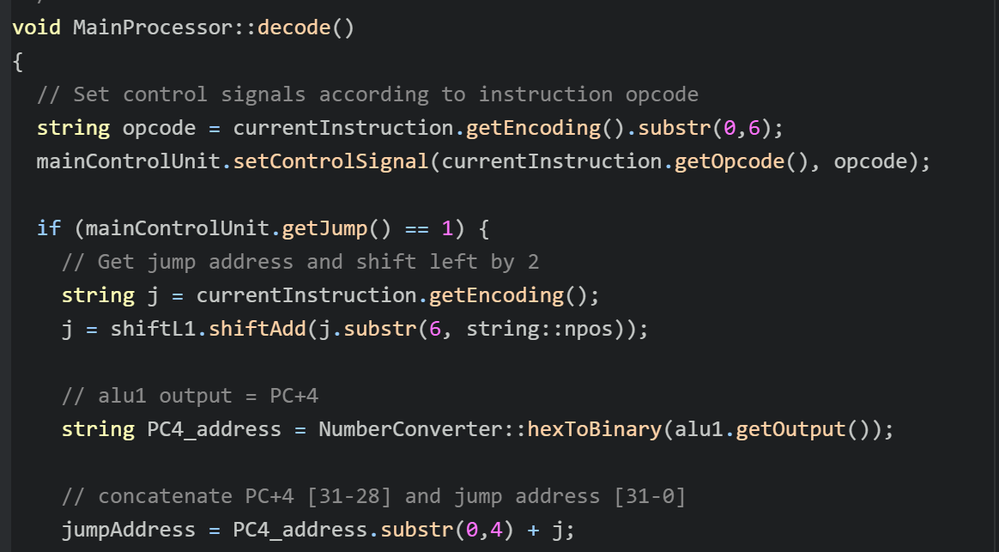
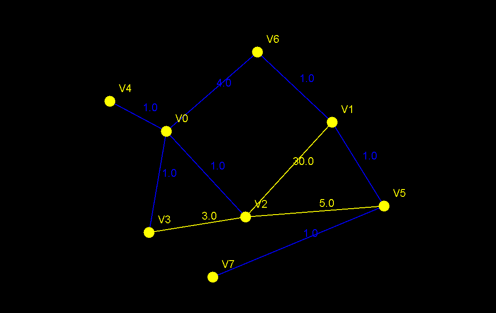
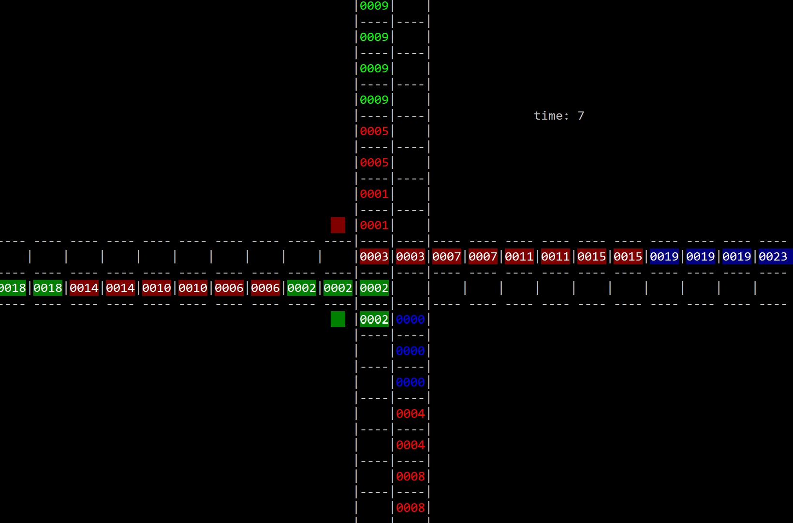

Kent Soledispa
Home
Projects
Assembly Interpreter
Kruskal's Algorithm
Traffic Intersection
About
Resume
Contact
Kent Soledispa
𝄖𝄖𝄖𝄖𝄖𝄖𝄖𝄖𝄖𝄖𝄖𝄖𝄖𝄖𝄖𝄖𝄖
Computer Science Undergraduate
Coding Projects

Assembly Interpreter
A C++ program able to read and execute a selected number of MIPS Assembly instructions given the adequate files.

Kruskal's Algorithm
An interactive program that lets users construct a graph and calculate the minimum spanning tree of the graph.

Traffic Intersection
A C++ program that simulates a traffic intersection in which different sized vehicles have to travel through.